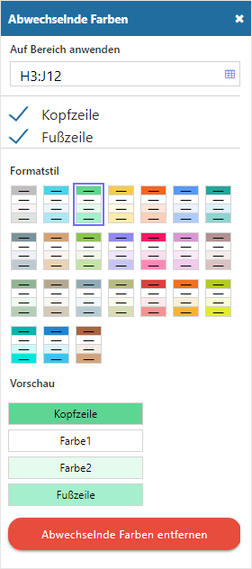
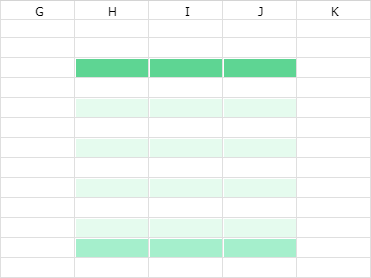

Über die Funktion "Abwechselnde Farben" können Zellen schnell und einfach mit einem Farbschema versehen werden. Das Einstellungsfenster selbst wird über den Button "Abwechselnde Farben…" im Auswahlmenü der Buttons Textfarbe bzw. Füllfarbe geöffnet.
Hinweis
Der Farbwechsel wird sofort auf den zuvor markierten Bereich angewendet und kann durch die Parameter des Einstellungsfensters angepasst werden.
Eigenschaftsfenster "Abwechselnde Farben"

Ø Auf Bereich anwenden
Angabe des Bereichs, auf welchem der Farbwechsel wirken soll.
Ø Kopfzeile / Fusszeile
Mit Hilfe von Checkboxen kann definiert werden, ob eine Kopf- und / oder Fusszeile mit einer abweichenden Farbe gebildet werden soll.
Ø Formatstil
An dieser Stelle kann das Farbschema des Farbwechsels gewählt werden.
Buttons
Ø Abwechselnde Farben entfernen
Bei Anwahl dieses Buttons wird der Farbwechsel von den Zellen entfernt und das Einstellungsfenster geschlossen.
Beispiel
